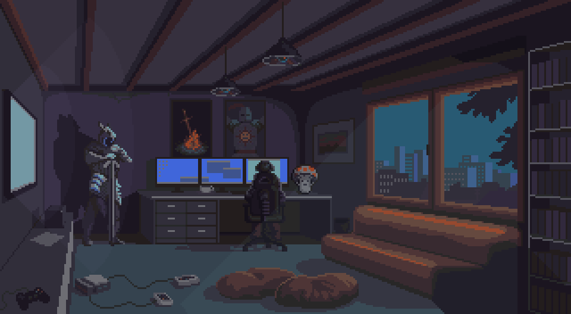

Your Guide to Crafting the Perfect Journey!
Welcome to our ultimate guide to creating the perfect itinerary for your next adventure! Whether you're planning a weekend getaway, a month-long expedition, or anything in between, we are here to help you make the most of your travels. With a well-crafted itinerary, you can ensure that you hit all the must-see spots while also enjoying hidden gems and spontaneous experiences along the way.
A well-thought-out itinerary can transform a good trip into an unforgettable journey. It helps you manage your time effectively, ensuring that you don’t miss out on the experiences that matter most to you. By planning ahead, you can find the best deals on accommodations and transportation, avoid peak tourist times, and discover off-the-beaten-path locations.
Evenings were no different. The digital landscapes of video games became my escape, a place where I could be a hero, even if it was just virtual. Alongside the immersive worlds of gaming, movies played a significant role in my escapism.
The cinematic tales, with their captivating narratives and characters, offered me a temporary respite from my own reality. They transported me to different worlds, times, and experiences, allowing me to live vicariously through the protagonists.
But once the credits rolled and the screen went dark, reality would set back in. I'd find myself aimlessly wandering the streets, lost in thought, wondering if this was all life had in store for me.
We love hearing about your travel adventures! Share your itineraries, photos, and stories with our community. Not only does it inspire fellow travelers, but it also helps others in their planning process. Start planning your perfect journey today with our comprehensive guide to setting up itineraries. Happy travels!